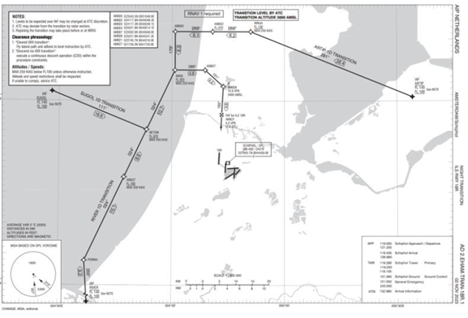
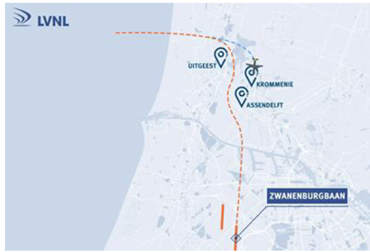
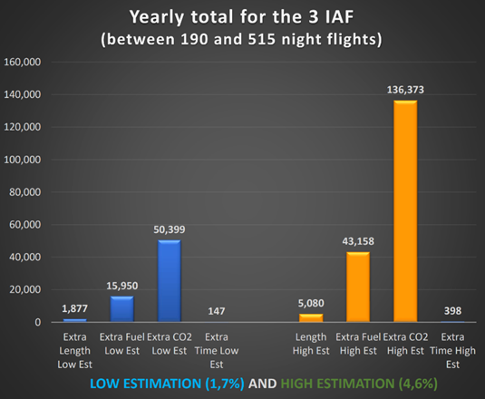

Overview
This use case addresses one of the measures of the programme Minder Hinder Schiphol (“Less Nuisance for Schiphol”) that resulted from the requirement from 2019 of the Dutch government requesting stakeholders at Amsterdam Schiphol (EHAM) to make a plan to reduce noise nuisance for people living around the airport.
For context, it is important to note that EHAM already had night approach procedures with continuous descents for RWY 06 and for RWY 18R.
IMAGE
Runway 18C is the main replacement in case runway 18R is not available. However, inbounds to 18C are vectored to the ILS instead of following a night transition.
The operational change consisted in creating a curved approach to runway 18C with continuous descents to avoid overflying communities, hence reducing noise nuisance. The design of the curved approach was done in a collaborative way with the communities.

Extract from AIP Netherlands – Night Transition ILS RWY 18R
Two approaches were designed, but one of them had a design that only aircraft with advanced RNP capabilities could fly, so that it was complemented by a straight-in approach also with continuous descent for aircraft not able to fly the curved RNP approach.
Since the focus was on noise reduction, there (most probably) had to be a trade-off with flight efficiency, especially for the flights coming from the East since they must fly towards the sea before proceeding for the approach, meaning that they must fly a longer route.
The approach followed for the assessment of the environmental impact was as follows: the change considered the trade-off between noise load/nuisance and fuel/CO2 emissions. As a result, both aspects have been assessed (as part of a FABEC initiative, an impact assessment on flight efficiency (emissions) was made):
· Noise: measurement of peak levels in six points north of Schiphol.
· Emissions: NEST used to model old and new trajectories, and calculate route length, fuel consumption and emissions; low and high estimation was made based on annual number of night landings on 18C (1.7% to 4.6% of total, see Figure 21 on the right)

Route design – Illustration of advanced RNP route
Concerning noise results, the measure was evaluated, with results being published in May 2023:
- Maximum noise levels were measured in six points, of which three usable. For the other points the number of measurements was too low.
- Maximum noise levels were up to 4.1 dB lower than in 2019, before the introduction of the new procedure. The communities situated below the straight-in approach procedure benefit a lot of the new curved approach procedure.
- About 75% of the night approaches to 18C uses the curved procedure, another 14% a continuous descent with straight approach and the remaining 11% is vectored.
For emissions, the following results were obtained:
- The fuel consumption and thus CO2 emissions are higher with the curved approach (many flights at night come from the East and the Mediterranean area).
- The longer route length is not compensated by the benefits of continuous descents.
- The annual cost (fuel/CO2) of the curved night approach procedure is approximately 16 to 43 tons of fuel (50 to 136 tons of CO2).
In short, the conclusions of the assessment are as follows:
- The night arrival procedures for runway 18C have been designed to minimise as much as possible the noise impact on residential areas.
- The maximum noise levels have indeed been significantly reduced, but at the cost of increased fuel burn and emissions.
- In the end, the increased emissions played no (significant) role in decision-making, as noise prevailed over emissions (below FL60).

Impact on time/fuel/CO2 emissions
Concerning the application of the use case to other airports, it is believed that the same assessment could easily performed for other airports since noise level measurements are easy, and probably all ANSPs can use the NEST tool to model trajectories before and after the (proposed) change.
What was not included in the assessment is the following:
- The effects on the experienced noise nuisance since it could be very subjective and including the perception of the people living in areas being overflown because of the change in procedure.
- The effects on legislation about noise since it depends on local circumstances:
- The current framework is based on “noise load distribution” expressed by Lden & Lnight that take into consideration the number of people and number of dwellings inside noise contours together with noise load in enforcement points.
- The operations are not based on that framework but rather on the use of preferential runways and routes.